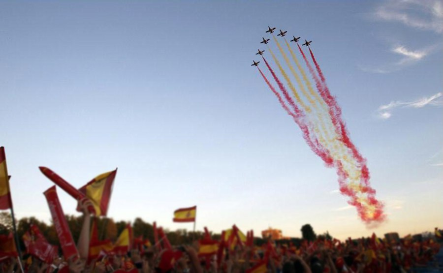
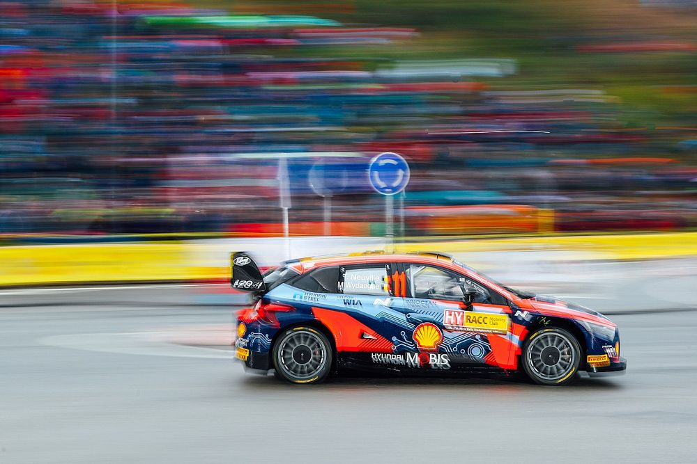
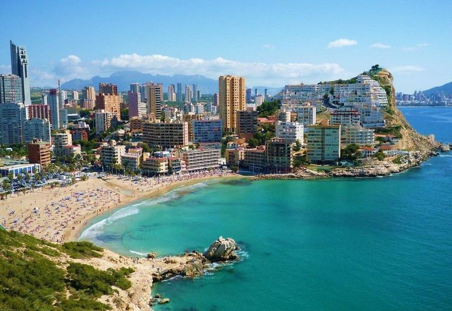
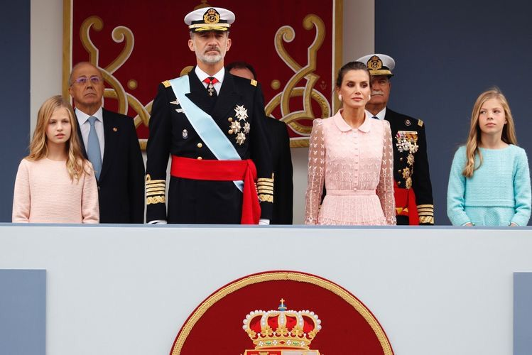
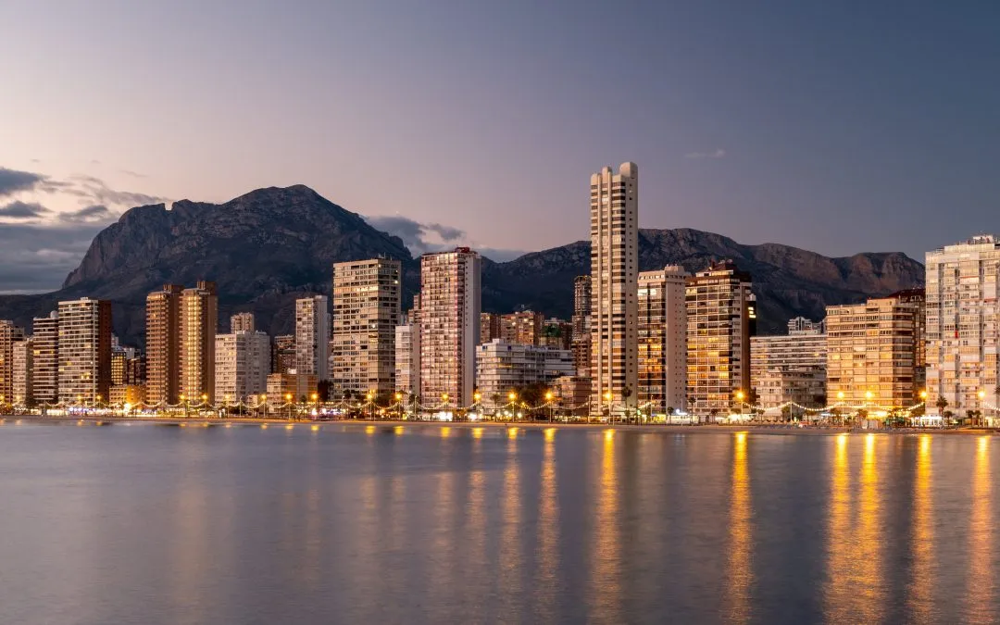

big news
خبر عااجل! تشاهدون الآن ابداع اقـدع واروع وافضل فريق
Spain’s National day
The Spanish Rally
dazzling success What's the secret behind it?
for the time being, come to Spain and enjoy it
L a s t N e w s :

Celebrate Spain’s National Day with us
Wednesday October 12, 2022
Spain’s National Day commemorates the arrival of Christopher Columbus in the Americas and is also....
Read More..

WRC Spain
Wednesday October 12, 2022
Neuville snatches slender lead from Ogier on Friday morning.
Hyundai’s Thierry Neuville ended the opening morning of ....
Read More..
4 students and an impressive success
Wednesday October 12, 2022
What is the secret of the impressive success and abnormal intelligence of 4 students?...
Read More..

Moving to Spain
Wednesday October 12, 2022
the Spanish town of Benidorm in the so-called Costa Blanca has long been a popular destination for people from all over Europe...
Read More..

Wednesday October 12, 2022 Celebrations
Spain’s National Day commemorates the arrival of Christopher Columbus in the Americas and is also sometimes known as Dia de la Hispanidad (Hispanic Day).
Italian-born Christopher Columbus set off from Palos de la Frontera in southwest Spain in 1492 on August 3. Just over two months later he arrived in the “New World.”
Columbus, who was sponsored by the Spanish monarchs Ferdinand of Aragon and Isabella of Castile, was actually looking for a western route to India but instead stumbled upon the Americas, a continent that had been largely unknown to Europeans. The discovery led to a period of rapid exploration of the continent.
Dia de la Hispanidad was first celebrated in Madrid in 1935 and was made an official public holiday in 1981. In 1987, its name was changed to Fiesta Nacional (Spain’s National Day), removing any reference to Spanish colonialism.
Spain’s national holiday coincides with the country’s Armed Forces Day and the military plays a significant part in the day’s celebrations. The main events on October 12 take place in Madrid, but regional capitals around the country also hold events to mark the day.
Wednesday October 12, 2022 WRC Spain
Neuville snatches slender lead from Ogier on Wednesday morning.
Hyundai’s Thierry Neuville ended the opening morning of Rally Spain with a slender 0.5s lead over Toyota’s Sebastien Ogier after a hotly contested quartet of asphalt stages.
Neuville snatched the rally lead from eight-time world champion Ogier after winning the fourth and final test of the morning loop.
The Belgian became the third leader across the four stages, following a bright start from newly-crowned world champion Kalle Rovanpera,
who won the opening two tests. Rovanpera ended the the loop in third, 4.2s adrift, while Ott Tanak was fourth, a further 1.8s in arrears, but ahead of Toyota’s Elfyn Evans.

Wednesday October 12, 2022 A dazzling success
Incredible success and indescribable intelligence.
4 female students succeeded in dazzling Spanish and international universities with their
unique programming capabilities. They have created a tourist site about Spain.
They participated in the programming competition held at their university and won first place,
as the site won the admiration of everyone who viewed it. The credit goes to their teacher,
who followed and helped them from the beginning and was a partner in this success.
There is no doubt that mastery is required in every project, as their project was perfect
and fulfilled all the requirements necessary for the success of any project.

Wednesday October 12, 2022 Live in Spain?
The Spanish town of Benidorm in the so-called Costa Blanca has long been a popular destination for people from all over Europe.It has also become a place for people to save on high energy bills thanks to its mild climate."It's cheaper to stay here than in the Netherlands,” said John Buter, a tourist. “It's much colder there. You have to turn on the heating. And you have to pay the energy company for that."
“You have to be crazy to stay in the Netherlands. You can enjoy the money you would otherwise spend on gas and electricity,” he said.
The tourism sector is eyeing the opportunity to increase the number of foreigners coming to the region.
It can cost around €50 per night in a hotel during the low season, and flats are also getting more bookings.
“Most tenants come from the north of Europe -- Norway, Sweden, The Netherlands, Germany,” said Daniel Elman, a landlord for MyFlats, which helps tourists temporarily rent apartments.
“It`s clear why. All those people would otherwise lose a lot of money to heat their homes. We do not have that need in the south of Europe,” Elman said.
The EU has accepted Spain's so-called "Iberian exception," which allowed the country to decouple the price of gas from electricity for a year.
The option could halve the energy bills of around 40% of people living in Spain and Portugal.
Some people in the city are sceptical that it will last long enough, however. “I don't think this will last more than a year,” said Maxim Lampole, a Belgian tourist.
“But I would say, for the time being, come to Spain and enjoy it.”